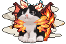
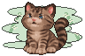
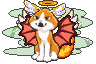
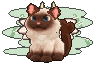
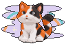
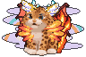
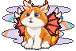

01 · standard · orange-white
body=standard · coat=orange-white · eyes=round · expression=parted-mouth · crown=none · ears=none · neck=none · back=none · tailTip=none
approved-base · visible=1148猫保持 64×64，锚点 (16,0)；每档 3 个代表组合。
body=standard · coat=orange-white · eyes=round · expression=parted-mouth · crown=none · ears=none · neck=none · back=none · tailTip=none
approved-base · visible=1148body=shortleg-round · coat=orange-white · eyes=round · expression=small-fangs · crown=antlers · ears=fin-ears · neck=small-lion-mane · back=small-wings · tailTip=forked-tail-tip
parts-p3-s198 · visible=907
body=standard · coat=tuxedo · eyes=sleepy-almond · expression=parted-mouth · crown=crystal-horns · ears=feathered-ears · neck=sunburst-ruff · back=dragon-wings · tailTip=phoenix-tail
evolution-chains-f7b148e8897b994c74de · visible=664
body=standard · coat=brown-tabby · eyes=sleepy-almond · expression=small-fangs · crown=none · ears=none · neck=none · back=none · tailTip=none
sleepy-coats-p2-s001 · visible=1215
body=slender-tall · coat=orange-white · eyes=sleepy-almond · expression=small-fangs · crown=halo · ears=celestial-ears · neck=frill-neck · back=feathered-wings · tailTip=flame-tail
evolution-chains-92045d87d297baa5f283 · visible=834
body=standard · coat=colorpoint · eyes=round · expression=small-fangs · crown=dragon-horns · ears=fin-ears · neck=small-lion-mane · back=small-wings · tailTip=forked-tail-tip
five-coats-p8-s126 · visible=1049
body=standard · coat=calico · eyes=round · expression=parted-mouth · crown=none · ears=none · neck=none · back=none · tailTip=none
five-coats-p5-s001 · visible=1234
body=standard · coat=rosetted · eyes=sleepy-almond · expression=small-fangs · crown=crystal-horns · ears=celestial-ears · neck=sunburst-ruff · back=dragon-wings · tailTip=phoenix-tail
evolution-chains-005ba00c043a84b36664 · visible=743
body=standard · coat=orange-white · eyes=round · expression=parted-mouth · crown=antlers · ears=feathered-ears · neck=frill-neck · back=feathered-wings · tailTip=flame-tail
evolution-chains-0093f17e4d523ef0d4ec · visible=865